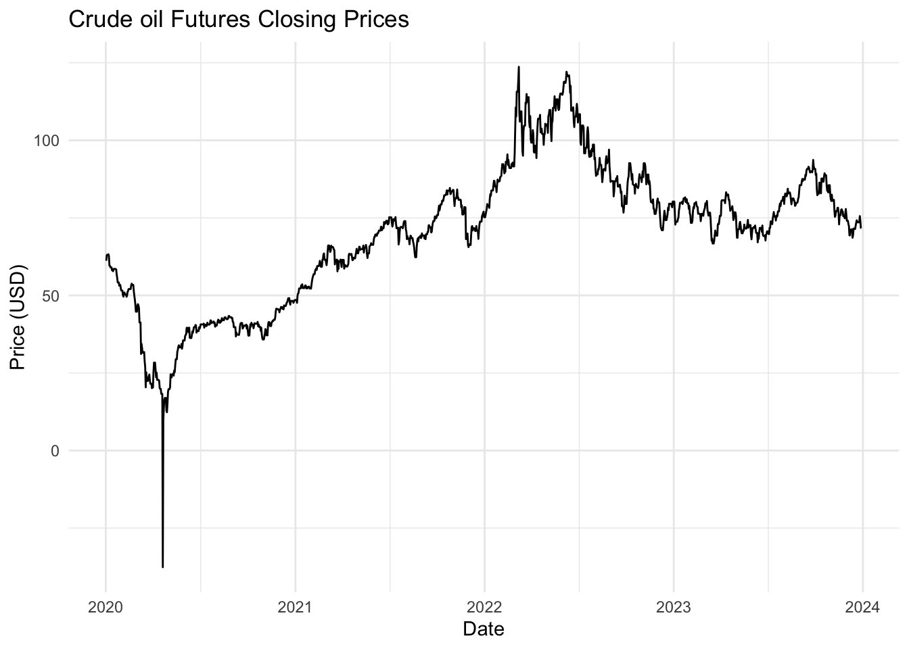

knitr::opts_chunk$set(echo= TRUE)Load required libraries
library(quantmod)
library(forecast)
library(ggplot2)
library(lubridate)Download data
In this section, we’ll download the historical price data for crude oil futures:
download_data <- function(symbol, start_date, end_date){
getSymbols(symbol, from = start_date, to = end_date, auto.assign = FALSE)
}
# Set parameters
symbol = "CL=F"
start_date = "2020-01-01"
end_date = "2023-12-31"
# Download data
data <- download_data(symbol, start_date, end_date)Warning: CL=F contains missing values. Some functions will not work if objects
contain missing values in the middle of the series. Consider using na.omit(),
na.approx(), na.fill(), etc to remove or replace them.Downladed data containd an index, which is in date format but must be adapted to time series, also contains prices in open, high, low and close data, volume which informs about the quantity traded and adjusted close prices.
cat("Dataset summary:\n")Dataset summary:print(summary(data)) Index CL=F.Open CL=F.High CL=F.Low
Min. :2020-01-02 Min. :-14.00 Min. : 13.69 Min. :-40.32
1st Qu.:2020-12-30 1st Qu.: 53.35 1st Qu.: 53.84 1st Qu.: 52.60
Median :2021-12-30 Median : 72.97 Median : 73.95 Median : 71.66
Mean :2021-12-31 Mean : 69.83 Mean : 71.22 Mean : 68.30
3rd Qu.:2022-12-29 3rd Qu.: 83.22 3rd Qu.: 84.55 3rd Qu.: 81.81
Max. :2023-12-29 Max. :124.66 Max. :130.50 Max. :120.79
NA's :1 NA's :1 NA's :1
CL=F.Close CL=F.Volume CL=F.Adjusted
Min. :-37.63 Min. : 0 Min. :-37.63
1st Qu.: 53.34 1st Qu.: 287602 1st Qu.: 53.34
Median : 72.87 Median : 352450 Median : 72.87
Mean : 69.77 Mean : 378186 Mean : 69.77
3rd Qu.: 83.13 3rd Qu.: 436951 3rd Qu.: 83.13
Max. :123.70 Max. :2288230 Max. :123.70
NA's :1 NA's :1 NA's :1 We can also check if the time period that was downloaded is the one we specified
cat("\nTime period covered:\n")
Time period covered:cat("Start date:", as.Date(index(data)[1]), "\n")Start date: 18263 cat("End date:", as.Date(index(data)[nrow(data)]),"\n")End date: 19720 cat("Total number of trading days:", nrow(data),"\n")Total number of trading days: 1007 Preprocess data
Now, let’s process the data by extracting the closing prices and ensuring we have a continous daily time series:
preprocess_data <- function(data){
# Extract closing prices and convert to time series
close_prices <- as.numeric(data[,4])
dates <- index(data)
ts_data <- xts(close_prices, order.by = dates)
# Ensure daily frequency and forward fill missing values
daily_data <- merge(ts_data, xts(, seq(start(ts_data),
end(ts_data),
by="day")))
daily_data <- na.locf(daily_data)
return(daily_data)
}
processed_data <- preprocess_data(data)We can take a look at our data by ploting the time series:
ggplot(data.frame(Date = index(processed_data),
Price = as.numeric(processed_data)),
aes(x = Date, y = Price)) +
geom_line() +
labs(title = "Crude oil Futures Closing Prices",
x = "Date",
y = "Price (USD)") +
theme_minimal()
Calculate and display some statistics
cat("\nBasic statistics of closing prices:\n")
Basic statistics of closing prices:print(summary(as.numeric(processed_data))) Min. 1st Qu. Median Mean 3rd Qu. Max.
-37.63 53.34 72.91 69.86 83.19 123.70 The graph shows the daily closing prices of crude oil futures over the specified time period. We can observe serevail intersting details:
- A sharp drop in prices in early 2020, likely due to the COVID-19 pandeminc.
- A gradual recovery and upward trend from mid-2020 to mid-2022.
- Some volatility and a slight downward trend in the later part of 2022 and 2023.
These patterns and the overall volatility will be challenging for our forecasting model to capture.
Split data
We’ll now split our data into training and testing sets:
split_data <- function(data, test_size = 0.2){
split_point <- floor(nrow(data) * (1 - test_size))
train <- data[1:split_point, ]
test <- data[(split_point + 1):nrow(data), ]
return(list(train = train, test = test))
}
split <- split_data(processed_data)
train <- split$train
test <- split$test
cat("Training set size:", nrow(train), "days\n")Training set size: 1166 dayscat("Test set size:", nrow(test), "days\n")Test set size: 292 daysWe’ve split the data so that 80% is used for training and 20% for testing. This allows us to train our model on a substantial amount of historical data while still having a significant portion for evaluating its performance.
Train SARIMA Model
Now, let’s train a SARIMA (Seasonal AutoRegressive Integrated Moving Average) model:
train_sarima <- function(data){
# Automatically select the best SARIMA model
model <- auto.arima(data)
return(model)
}
model <- train_sarima(train)
summary(model)Series: data
ARIMA(0,1,1)
Coefficients:
ma1
-0.3158
s.e. 0.0293
sigma^2 = 7.066: log likelihood = -2791.57
AIC=5587.14 AICc=5587.15 BIC=5597.26
Training set error measures:
ME RMSE MAE MPE MAPE MASE ACF1
Training set 0.01931691 2.6559 1.228565 0.4895984 2.340853 1.131177 0.01242817SARIMA is a popular model for time series forecasting, with the following properties:
- Seasonal component: it can capture both seasonal and non-seasonal patterns in the data.
- Autoregressive (AR): It uses past values to predict future values.
- Integrated (I): It can make the time series stationary by differencing.
- Moving Average (MA): It uses past forecast erros in the prediction equation.
The auto.arima() function automatically selects the best SARIMA model based on the AIC (Akaike Information Criterion). The model summary shows:
- The selected ARIMA order (p,d,q): (0, 1, 1)
- Coefficients in the model: which is an ma1 of -0.3158
- Measures of fit like AIC, BIC, and log-likelihood
This automated approach saves time in model selection, but it’s always good to validate the results and potentially try manual parameter tuning if needed.
Make predictions
Let’s use our trained model to make predictions:
make_predictions <- function(model, n_periods){
forecast(model, h = n_periods)
}
predictions <- make_predictions(model, nrow(test))The forecast() function generates pint forecasts as well as prediction intervals. The prediction intervals give us an idea of the uncertainty in our forecasts.
cat("Predictions mean value\n:")Predictions mean value
:head(predictions$mean)Time Series:
Start = 1167
End = 1172
Frequency = 1
[1] 76.6646 76.6646 76.6646 76.6646 76.6646 76.6646cat("Predictions lower values\n:")Predictions lower values
:head(predictions$lower)Time Series:
Start = 1167
End = 1172
Frequency = 1
80% 95%
1167 73.25800 71.45466
1168 72.53698 70.35195
1169 71.92439 69.41508
1170 71.38237 68.58613
1171 70.89102 67.83467
1172 70.43832 67.14232cat("Predictions upper values\n:")Predictions upper values
:head(predictions$upper)Time Series:
Start = 1167
End = 1172
Frequency = 1
80% 95%
1167 80.07119 81.87454
1168 80.79222 82.97725
1169 81.40481 83.91412
1170 81.94682 84.74307
1171 82.43818 85.49453
1172 82.89088 86.18688Evaluate Model
Now, let’s evaluate our model’s performance:
evaluate_model <- function(actual, predicted){
rmse <- sqrt(mean((actual - predicted$mean)^2))
mae <- mean(abs(actual - predicted$mean))
mape <- mean(abs((actual - predicted$mean) / actual)) * 100
return(list(RMSE = rmse, MAE = mae, MAPE = mape))
}
metrics <- evaluate_model(test, predictions)
cat("RMSE:", metrics$RMSE, "\n")RMSE: 6.643713 cat("MAE:", metrics$MAE, "\n")MAE: 5.556715 cat("MAPE:", metrics$MAPE, "\n")MAPE: 7.044422 We are using three common metrics to evaluate our model:
- Root Mean Square Error (RMSE): Measures the standard deviation of the residuals.
- Mean Absolute Error (MAE): Measures the average magnitude of the errors in a set of predictions.
- Mean Absolute Percentage Error (MAPE): Measures accuracy as a percentage, giving us an idea of how far the predictions are off on average.
These metrics give us different perspectives on our model’s performance. Lower values indicate better performance.
Plot results
Finally, let’s visualize our results:
plot_results <- function(train, test, forecast){
# Combine data
all_data <- rbind(train, test)
# Create a data frame for ggplot
plot_data <- data.frame(
Date = index(all_data),
Price = as.numeric(all_data),
Type = c(rep("Train", nrow(train)), rep("Test", nrow(test)))
)
forecast_data <- data.frame(
Date = index(test),
Price = as.numeric(forecast$mean),
Type = "Forecast"
)
plot_data <- rbind(plot_data, forecast_data)
# Create the plot
ggplot(plot_data, aes(x = Date, y = Price, color = Type)) +
geom_line() +
geom_ribbon(data = forecast_data,
aes(ymin = forecast$lower[,"95%"],
ymax = forecast$upper[,"95%"],
fill = Type),
alpha = 0.2) +
labs(title = "Energy Price Forecasting",
x = "Date",
y = "Price") +
theme_minimal()
}
plot_results(train, test, predictions)This plot shows:
- The original training data in blue
- The actual test data in green
- Our model’s predictions in green
- The shaded area represents the 95% prediction interval for our forecasts